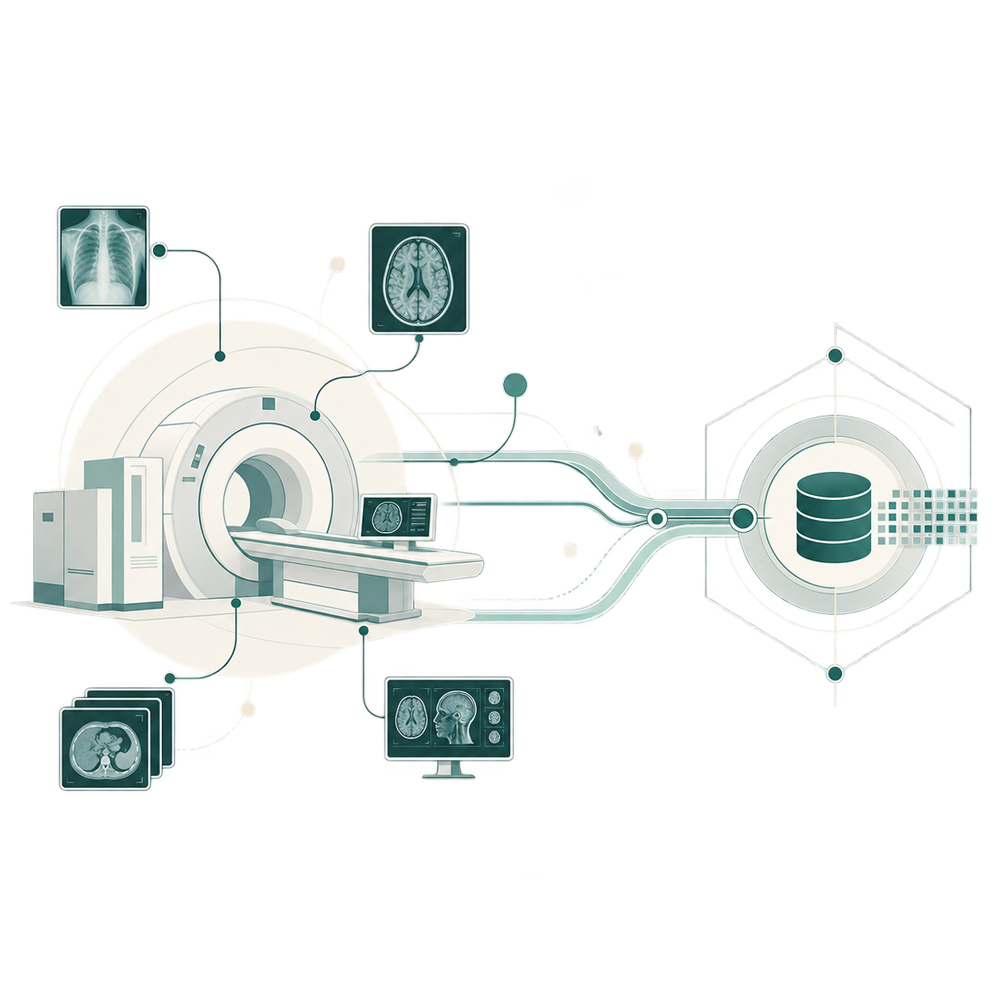
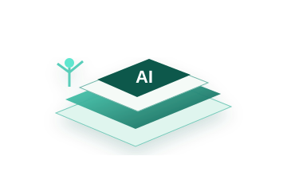
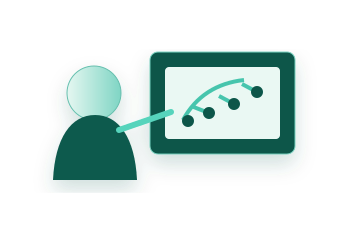

01Radiology &
Radiology &
medical imaging
CT · MRI · X-ray · ultrasound
INSTITUTIONS · DATA · PEOPLE · PROGRESS
Deep institutional access. Local teams. AI-ready delivery.
HOSPITALS / UNIVERSITIES / RESEARCH CENTERS / LABS
HEALTHCARE DATA
Coverage depends on institution, geography, permissions, and intended use.

CT · MRI · X-ray · ultrasound
Results · reports · longitudinal history
Vitals · waveforms · connected sensors
Encounters · treatment history · outcomes
Dental imaging · treatment records · clinical history
Illustrative capabilities, not an availability list. No healthcare data is accepted through this website.
01 · LEADERSHIP
Institutional access, regional expertise, and operational execution to source and deliver high-quality healthcare data.

President · Health Sciences

Data Infrastructure & Operations
OUR TEAM
Healthcare, education, media, AI, and regional execution.

MEDIA PARTNERSHIPS
Media Partnerships Lead

REGIONAL DELIVERY
Regional Education & Institutional Partner
EDUCATION STRATEGY
Education Strategy Partner
AI EDUCATION & CYBERSECURITY
AI Education & Cybersecurity Partner
EDUCATION & WORKFORCE
Practical AI, cybersecurity, and digital-skills programs for schools, colleges, universities, and institutional teams.

01Industry-aligned programs for schools and colleges.

02Training, tools, and support for teachers and faculty.
Labs, projects, and hands-on technical training.
Routes into internships, certifications, and technical careers.
04 · LEGAL
Regional counsel supports data licensing, technology transactions, privacy, and cross-border structuring.

Outside Legal Counsel · Tal & Co.
MIDDLE EAST · NEAR EAST · SOUTH ASIA

Institutional relationships and regional access.
Healthcare relationships and regional access.
Connected institutional access.
Extended institutional and education relationships.
START A CONVERSATION
A short, high-level note is enough to begin.
Do not submit patient-identifiable information or confidential dataset content.